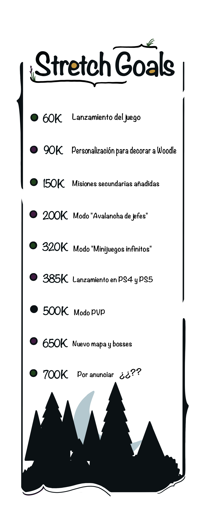

Woodle es un videojuego de plataformas en 2D perteneciente al género de la aventura y la comedia.
"ATENCIÓN: Esta página simula la campaña de microfinanciación de un videojuego ficticio y no representa un producto real. Práctica de Multimedia, 1º GDDV - Curso 21/22 (Quintana), URJC. La URJC no se hace responsable del contenido expuesto por el autor"
Just another free, fully responsive site template
built by @ajlkn for HTML5 UP.
Woodle
Acompaña a Woodle en su viaje a través de su extraño mundo, y por el camino conoce a sus todavía más extraños habitantes. Recorre coloridos paisajes, haz nuevos amigos…¿O no?, y encuentra los secretos escondidos en esta maravillosa tierra. Pero sobretodo, ¡Diviértete!
¡Mira el traíler oficial de Woodle!
¡También puedes verlo en nuestra canal de Youtube oficial!
Woodle es un juego de plataformas en 2D, al estilo Metroidvania, en el que nos pondremos en la piel de un ojo con patas, con el que te aventurarás en la oculta y lejana Isla Golly. Visitarás hasta los lugares más recónditos de la isla y conocerás a seres de todo tipo, con los que podrás establecer amistades, o por el contrario, luchar contra ellos hasta la muerte. Deberás descubrir los secretos de la isla, escalar, saltar, explorar, correr, superar infinidades de obstáculos que irás encontrando a medida que avances por el mundo.
!Ojo! Qué no lo decimos por Woodle, pero no debes olvidar pasártelo bien.
¡Escucha algunas de las canciones oficiales y sumérgete en mundo de Woodle!
Juega como Woodle, un pobre ojo con patas al que su familia ha echado de casa para que se busque la vida, puesto que es tradición familiar que, al alcanzar la mayoría de edad, los ojos de la familia Toodle emprendan un viaje para dejar su huella en la isla. El padre de Woodle, Jean-Carlo, quiere que su hijo siga sus pasos hacia el lado oscuro, por lo que intentará tentar a su hijo de obrar mal y sembrar el caos por todos los rincones de la isla.
Woodle deberá conseguir resaltar por encima de los demás para complacer el absurdo asunto que lleva años rondando a su familia. La maldita dejada de huella. Lo curioso de todo esto es que para hacerlo no importa si lo hace bien o mal, es más, su padre fue el más desgraciado de toda la familia Toodle, quien asesinó a un pueblo entero con sus propias manos. No obstante, este no es el camino que Woodle quiere seguir... ¿O sí?... Quién sabe lo que ronda por la cabeza de Woodle...
Imagen aérea inédita de la Isla Golly
En tus andanzas por la Isla Golly deberás ir derrotando bosses (Hemos contado como unos 10 pero seguro que hay más) y mejorando tus habilidades para.... ¿Adivina qué? ¡Derrotar aún más bosses! Tambien deberás elegir bien tus acciones, puesto que podrán llegar a tener consecuencias terribles para el pobre Woodle.
Woodle cuenta con una lengua larga que puede utilizar para multitud de cosas. Puede ser un arma, un gancho, o incluso puede utilizarla a modo de helicóptero. Combina las distinas posibilidades que te ofrece la lengua de Woodle para superar todos los obstáculos que se te pongan por delante.
A medida que progreses en el juego irás desbloqueando nuevos objetos que te permitirán seguir avanzando por la Isla Golly. Solamente trata de evitar quemar la casa de una pobre familia inocente...¡O hazlo! Al final estás aquí para jugar, ¿No?
Enfrentate a enemigos completamente diversos, si es que acaso son realmente enemigos, en un maravilloso modo de combate RPG por turnos. No te atrevas a decir que no es maravilloso.
Tremenda bola de pinchos. No toques la pantalla por si acaso.
Cuando te canses de combatir y relacionarte, y prefieras una experiencia más relajante y placentera podrás optar por visitar el huerto de la familia Toodle. Cultiva plantas, obten materiales de éstas y prepara ungüentos que te sirvan para progresar en tu aventura.
Además, también podrás disfrutar de 15 maravillosos minijuegos, o al menos eso creemos nosotros, que irás desbloqueando a lo largo de la historia. Supera estos pequeños desafíos y obtén objetos especiales que te serán de gran ayuda para tu aventura. Tampoco nos hagas mucho caso que quizás tan útiles no son.
Ayuda a Woodle a lograr su propósito y deja huella en la Isla Golly. En verdad, creo que tú y yo deberíamos dejar de engañarnos, haz lo que te de la gana con Woodle y vive la experiencia lúdica más divertida que jamás hayas visto.

* Cada Tier incluye las recompensas del anterior *
Tier
Descripción
Fecha de Entrega
Donación
Fan
Pack de fondos de pantalla de Woodle.
Las recompensas digitales serán enviados por correo electrónico el 1 de agosto de 2022.
Superfan
Taza de Woodle.
Código digital de Steam.
Las recompensas digitales serán enviados por
correo electrónico el 1 de agosto de 2022. Las recompensas físicas serán enviadas el 10 de agosto de 2022.
Fundador
Primera línea de peluches de Woodle.
Tu nombre en un personaje del juego.
Artbook de Woodle.
Las recompensas digitales serán enviados por correo electrónico el 1 de agosto de 2022. Las recompensas físicas serán enviadas el 10 de agosto de 2022.
Amigo de Woodle
Figura de 30 cm de Woodle.
3 Códigos digitales de Woodle para la plataforma de tu elección.
Pack de cuadernos de Woodle firmados por el equipo.
Primera línea de camisetas Woodle.
Las recompensas digitales serán enviados por correo electrónico el 1 de agosto de 2022. Las recompensas físicas serán enviadas el 10 de agosto de 2022.
Primo de Woodle
Diseña una skin para Woodle.
Diseña un boss del juego.
Elige el nombre de una zona del juego.
Tu nombre en los créditos junto con el de los desarrolladores.
Acceso anticipado a Woodle y más...
Las recompensas digitales serán enviados por correo electrónico el 1 de agosto de 2022. Las recompensas físicas serán enviadas el 10 de agosto de 2022.
Marcos De Ozaeta Cabadas
Trabajos reales: Gestión de redes sociales, escritor de la página web, diseño 2D y encargado organizador del equipo. Trabajos ficticios: Director ejecutivo y artista técnico.
Sebastián Loges de Faria
Trabajos reales: programación, diseño de la página web y colaborador con el equipo de música. Trabajos ficticios: Director de diseño.
Alejandro Pérez Carretero
Trabajos reales: Diseñador 2D, música y guión. Trabajos ficticios: Director de Marketing y diseñador de personajes.
Carlos Santayana Vicente
Trabajos reales: Programación, Layout y Diseño 2D. Trabajos ficticios: Director técnico y artista técnico.
Cristina Valero Abella
Trabajos reales: Diseño 2D para la página.
Trabajos ficticios: Director creativa y concept artist.
¡Puedes estar atento a nuestro feed de Twitter desde esta misma página!
¿Saldrá Woodle para PlayStation 4 y PlayStation 5 en un futuro?
Sí, ¡Woodle saldrá para PlayStation 4 y PlayStation 5 si logramos llegar a la meta indicada!
¿La versión para Nintendo Switch de Woodle será física o solo digital?
Woodle para la Nintendo Switch tendrá una versión tanto física como digital.
¿Para qué tiendas digitales de PC estará disponible Woodle?
Inicialmente Woodle estará disponible únicamente en Steam.
¿Puedo ayudar a desarrollar Woodle?
Sabemos que os encanta Woodle tanto como a nosotros, pero no, no podéis ayudarnos a desarrollar el juego.
¿Puedo probar el juego ahora?
No.
¿Cómo puedo obtener las recompensas de contribuidor?
Las recompensas de contribuidor las consiguen las personas que confian en este proyecto y deciden apoyarnos económicamente. Existen diferentes niveles, cuanto más aportas mejores recompensas conseguiras. ¡Muchas gracias a todos los contribuidores!
¿En qué idiomas estará disponible Woodle?
Woodle estará disponible en Castellano e Inglés.
¿Qué pasará si no llegamos a cumplir todas las metas?
No nos pondremos tristes, ya que lo más importante es el camino que hemos construido. ¡Con el dinero conseguido cumpliremos las metas concretadas para que todos puedan disfrutar!
.png)